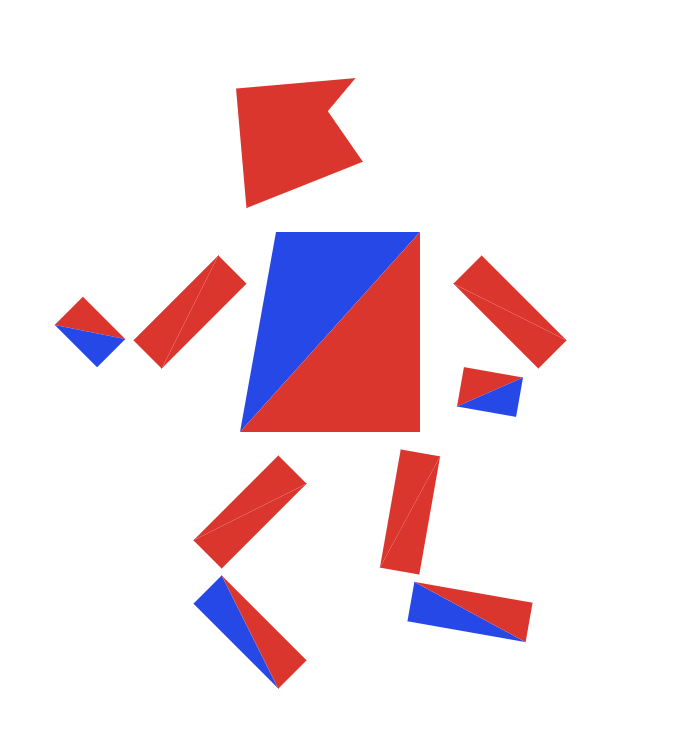

We were able to rasterize triangles by calculating the differences between all of the adjacent points on each triangle and performing the three line test to check whether or not a pixel in the image was indeed inside a triangle. If it was inside the triangle, or even on the edge, then we filled in the pixel with the fill_pixel function. Our algorithm is no worse than one that checks each sample within the bounding box of the triangle because that was my first approach. We have further optimized this approach as discussed in the Special Optimizations section below.
I did not encounter any problems other than figuring out which syntax to use for these functions.
Cubeman is now a cool robot with a flashy hairstyle. He is running away from all adoring fans.

Barycentric coordinates are useful for interpolation across triangles. Interpolation is useful for specifying values, in our case color, at vertices and obtaining varying values across the surface. In this image, we have a single triangle with three vertices: one blue, green, and red. These vertices ultimately produce a smoothly blended color triangle.
Problems we encountered consisted of figuring out which color to use to fill in each desired pixel. Turns out, we had to use the sum of all the three colors c0, c1, c2 with the intensity being weighted by alpha, beta, and gamma.


Pixel sampling is when we evaluate a pixel with a function. We had to compute the barycentric coordinates in order to obtain the varying texture coordinates for our texture mapping. The texture coordinates were used to calculate the uv vector we needed to get a specific point of a triangle within the image. We implemented pixel sampling to perform texture mapping by attaining each pixel and deciding on whether we had to plug it into the nearest or the bilinear sampling method based on the psm (pixelSampleMethhod) attribute. The output of our evaluated input was a color which we then plugged into the fill_pixel method for each pixel. The difference between the nearest sampling method and the bilinear sampling method is that nearest is best used for categorical data such as land-use classification or slope classification. The values that go in the grid remain the same. The value of the output cell is determined by the nearest cell center on the input grid; whereas bilinear uses a weighted average of the four nearest cell centers. The closer an input cell center is to the output cell center, the higher the influence of its value is on the output cell value. This means that the output value could be different than the nearest input, but is always within the same range of values as the input. In the beginning, we struggled with conceptual problems such as how to calculate the desireed uv vector. Going to office hours helped clear any uncertainty.